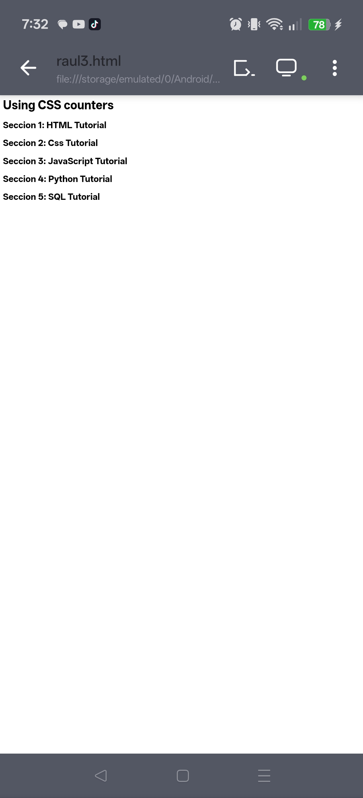
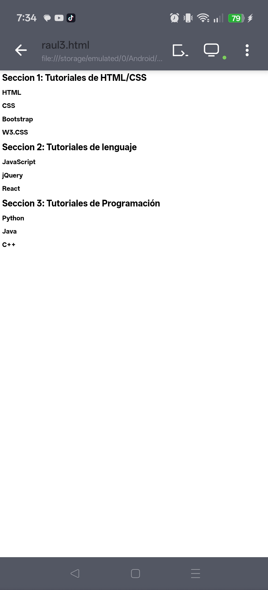
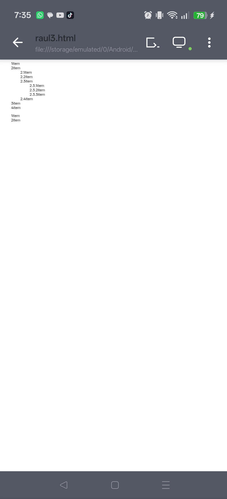

Contadores CSS: Secciones y Listas Anidadas
En esta práctica se estudia el uso de los contadores en CSS para crear numeraciones automáticas en elementos HTML, como títulos y listas ordenadas, sin necesidad de escribir los números manualmente.



1. Contador básico en CSS
Se utiliza counter-reset para iniciar un contador y counter-increment en h2 para generar numeración automática como “Sección 1, Sección 2…”.
2. Secciones y subsecciones
Se manejan dos contadores: uno para secciones (h1) y otro para subsecciones (h2), generando formatos como 1.1, 1.2, 2.1, etc.
3. Listas anidadas
Se usa counters() para generar numeración jerárquica en listas ordenadas, permitiendo estructuras como 1.1.1 o 2.3.1 automáticamente.
El uso de contadores en CSS permite automatizar la numeración de contenido, lo que facilita la organización de estructuras complejas como títulos y listas anidadas, haciendo el código más limpio y eficiente.